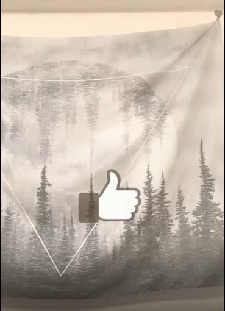

CREATIVE AI LAB // 創意 AI 實驗室
// LoRA 商業生圖 × Spark AR 濾鏡
用 AI 生圖與互動濾鏡，同時解決「拍攝成本」跟「社群擴散」兩件事——訓練專屬 LoRA 模型取代部分商業攝影需求，開發 Spark AR 濾鏡讓品牌內容自然被分享出去。
2
// LoRA 風格模型
數十萬+
// 濾鏡累計使用
IG
// 互動濾鏡發布平台
LORA SHOWCASE // 商業生圖
// LoRA 商業生圖
訓練專屬 AI 模特兒與產品 LoRA，為品牌節省拍攝成本。點擊切換查看不同應用情境。
AI 商用產品視覺
將產品賣點、使用情境與目標受眾轉化為可視化的廣告素材，透過 AI 快速產出商品情境圖、社群主視覺與電商行銷素材。
SPARK AR // 互動濾鏡
// Spark AR 濾鏡開發
自主開發 IG 互動濾鏡，結合社群裂變創造數十萬次使用量。

數十萬+
// 濾鏡累計使用次數